I started by performing a full TCP port scan to identify exposed services and gather version information.
nmap 10.10.11.13 -Pn -sC -sV -p- --open --stats-every=5s -oA scan
The scan revealed three main services: SSH running on port 22, an HTTP service on port 80 served by nginx, and a Nagios NSCA service on port 8000. When accessing the web application, the server could not initially be resolved, so I added the domain to my local /etc/hosts file.
To identify the technologies used by the application, I ran WhatWeb against the target.
whatweb http://runner.htb/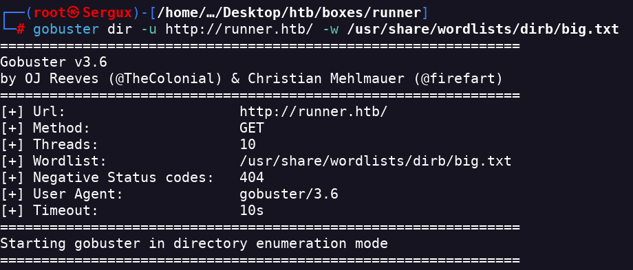
With the web application accessible, I performed directory brute-forcing in search of interesting endpoints, potential login pages, or upload functionalities.
gobuster dir -u http://runner.htb/ -w /usr/share/wordlists/dirb/big.txt
This enumeration revealed the presence of an /assets directory, but no immediately exploitable functionality. I continued by attempting virtual host discovery using ffuf, although this did not produce meaningful results.
ffuf -u http://runner.htb/ -H "Host: FUZZ.runner.htb" -w /usr/share/wordlists/dirbuster/directory-list-2.3-medium.txt -fs 3058I then switched to Gobuster’s vhost mode, which successfully identified several virtual hosts. Among them, one stood out due to the presence of a login interface.
gobuster vhost --append-domain -u http://runner.htb/ -w /usr/share/seclists/Discovery/DNS/namelist.txt --random-agent -t 600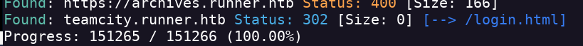
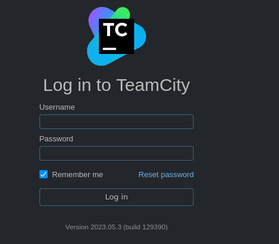
This virtual host was added to /etc/hosts. Accessing it redirected me to a TeamCity login page, revealing that the application was a JetBrains TeamCity CI/CD server. The version was disclosed directly on the login page, which helped narrow down potential vulnerabilities.
To identify known vulnerabilities affecting TeamCity, I used Nuclei with the appropriate tags. This scan identified a critical authentication bypass vulnerability.
nuclei -tags teamcity -u teamcity.runner.htbFurther research confirmed the issue as CVE-2024-27198, which allows authentication bypass through an alternative vulnerable path. Using a public exploit, I was able to create a new administrative user and gain access to the TeamCity dashboard.
python3 CVE-2024-27198.py -t http://teamcity.runner.htb/login.html -u sergux -p sergux2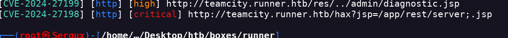
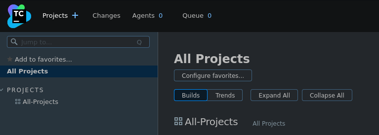
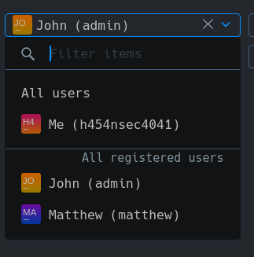
Once authenticated as an administrator, I enumerated existing users and looked for ways to execute arbitrary commands on the underlying system. I leveraged another known vulnerability, CVE-2023-42793, which allows remote code execution through TeamCity.
bash CVE-2023-42793_rce.sh teamcity.runner.htb 80 "id"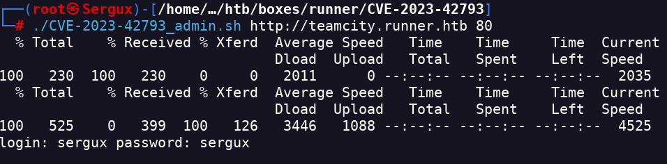
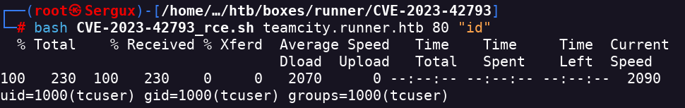
After confirming command execution, I modified the exploit to trigger a reverse shell. The payload downloaded and executed a Bash reverse shell script hosted on my attacking machine, providing a more stable interactive session.
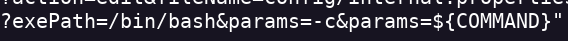
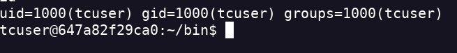
During post-exploitation enumeration, I discovered a private SSH key stored at the following location:
/data/teamcity_server/datadir/config/projects/AllProjects/pluginData/ssh_keys/id_rsa
Using this key and testing it against previously identified users, I successfully authenticated via SSH. In case of permission issues, adjusting the file mode to 600 resolved the problem.
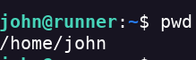
With SSH access established, I uploaded linpeas.sh to continue local enumeration. This process revealed the presence of an additional internal subdomain.
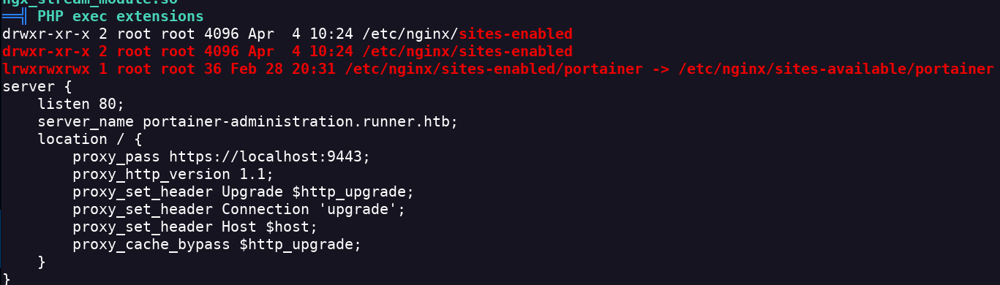
After adding the new subdomain to /etc/hosts, I accessed it and found a login page. Further inspection revealed that it was a Portainer instance.
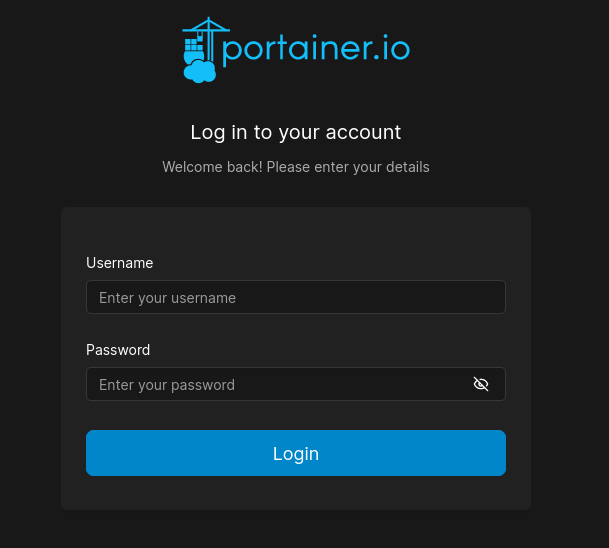
From this interface, I was able to generate a full database backup, which contained password hashes for all users.
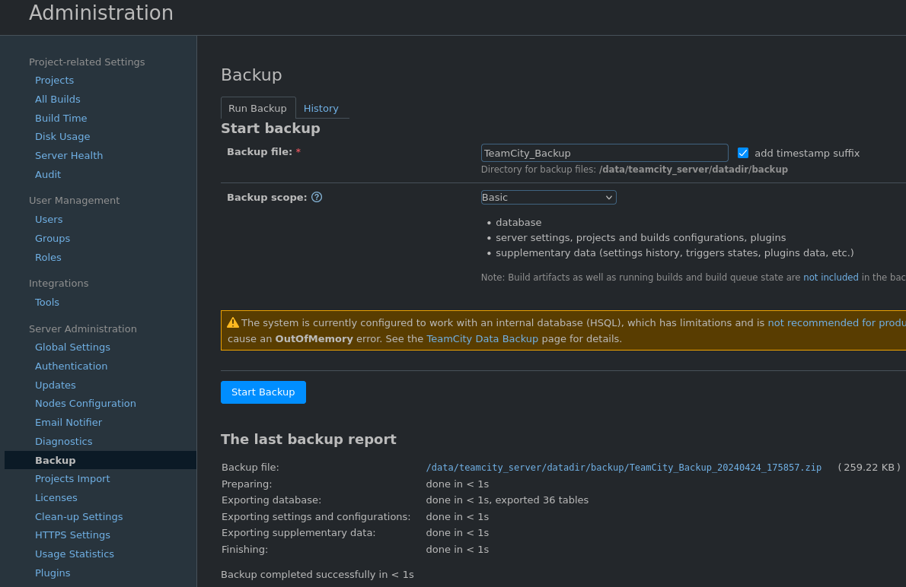
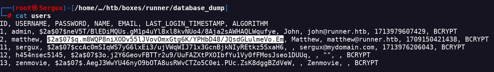
I cracked the hashes using Hashcat and recovered valid credentials for the user matthew.
hashcat -m 3200 -a 0 hash /usr/share/wordlists/rockyou.txt --showUsing the credentials matthew:piper123, I logged into the Portainer dashboard. Since Portainer allows managing Docker containers, this provided a clear path to privilege escalation.
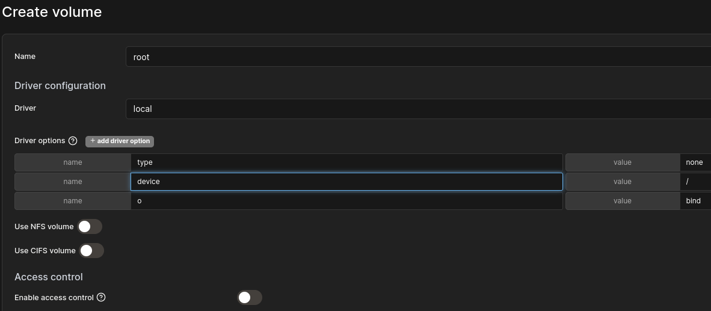
I created a new Docker volume mapped to the root filesystem and deployed a container using the TeamCity image. The container was configured with an interactive TTY and executed as the root user, with the root volume mounted inside.
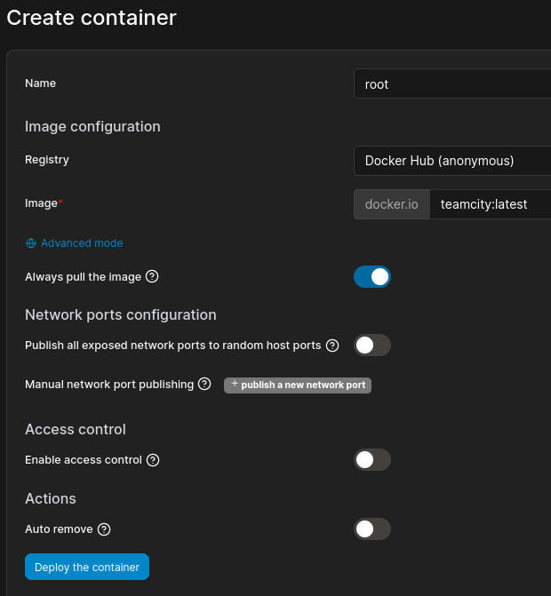
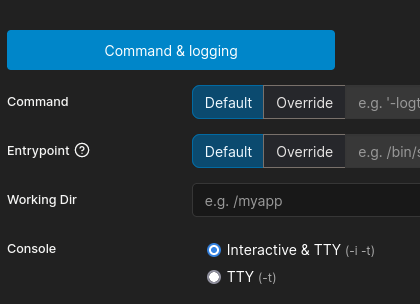
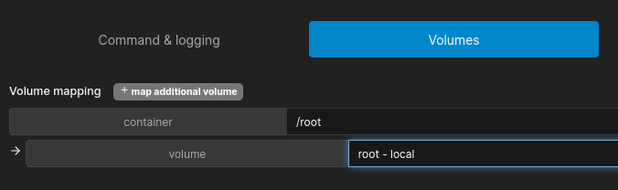
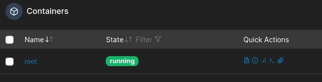
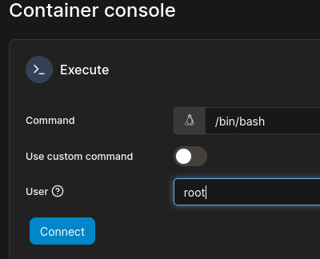
After connecting to the container, I obtained full root access to the host system and was able to retrieve the root flag, completing the compromise.
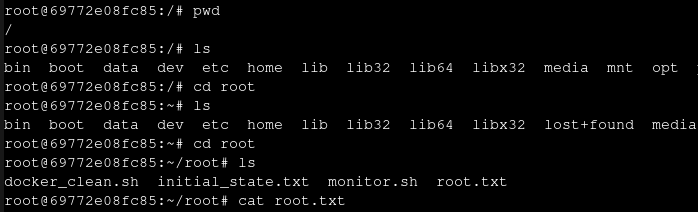